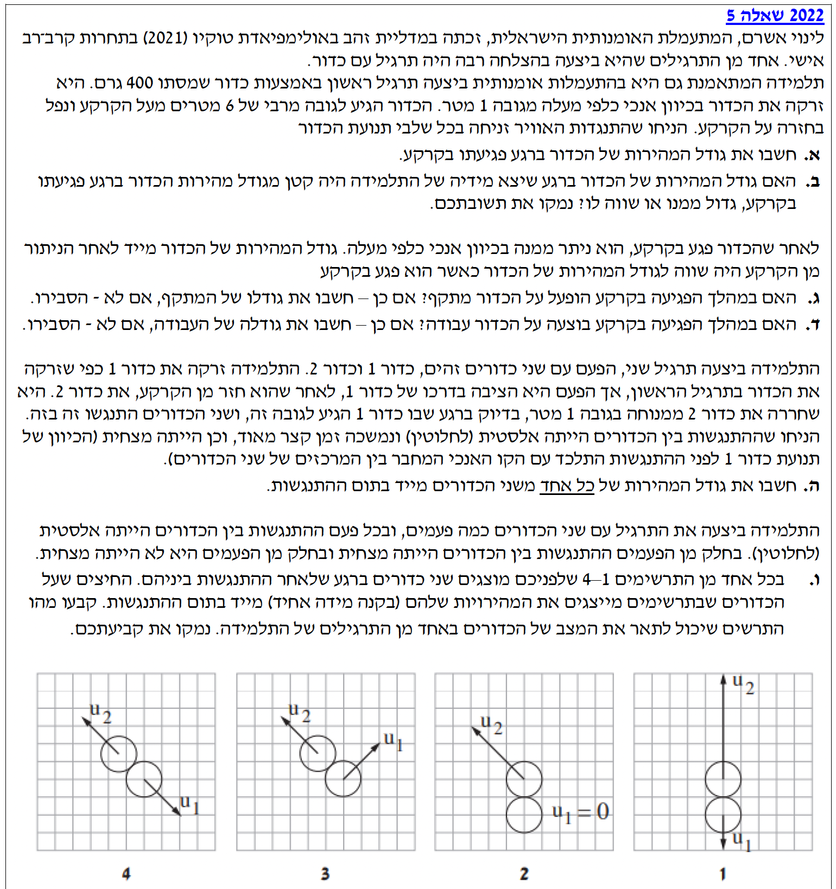

לאורך כל הפתרון נבחר ציר מיקום אנכי \( y \) שכיוונו החיובי הוא כלפי מעלה. מישור הייחוס (\( y=0 \)) נקבע בקרקע. לכן תאוצת הכובד מכוונת כלפי מטה וערכה הוא \( a = -g = -10 \text{ m/s}^2 \).

[תמונת השאלה המקורית]לא נמצאה תמונה בשם question-image.png באותה תיקייה.
סעיף א'
מה נתון:
מסת הכדור: נתון 400 גרם, נבצע המרת יחידות: \( m = 400 \text{ g} = 0.4 \text{ kg} \).
גובה זריקה התחלתי: \( y_0 = 1 \text{ m} \).
גובה מרבי (שיא הגובה): \( y_{max} = 6 \text{ m} \). בשיא הגובה מהירות הכדור מתאפסת: \( v_{top} = 0 \text{ m/s} \).
גובה הפגיעה בקרקע: \( y_f = 0 \text{ m} \).
התנגדות אוויר: זניחה, ולכן פועל רק כוח הכובד (נפילה חופשית).
תאוצת הכובד: \( g = 10 \text{ m/s}^2 \).
מה מחפשים:
את גודל המהירות של הכדור בדיוק ברגע פגיעתו בקרקע (\( |v_f| \)).
גודל מהירות הפגיעה בקרקע הוא \( 10.95 \text{ m/s} \) (או \( \sqrt{120} \text{ m/s} \)).
טיפ מורה:
אפשר לפתור סעיף זה גם בעזרת קינמטיקה: \( v^2 = v_0^2 + 2a(y-y_0) \). מהירות בשיא הגובה היא 0, תאוצה היא \( -10 \text{ m/s}^2 \), וההעתק הוא \( -6 \text{ m} \) (ירידה למטה). מקבלים שוב \( v^2 = 2(-10)(-6) = 120 \). חשוב לזכור: השאלה ביקשה "גודל מהירות" ולכן התשובה היא סקלר חיובי.
סעיף ב'
מה נתון:
גובה זריקה: \( y_0 = 1 \text{ m} \).
גובה פגיעה בקרקע: \( y_f = 0 \text{ m} \).
מערכת משמרת אנרגיה.
מה מחפשים:
האם גודל המהירות רגע לאחר הזריקה (\( v_0 \)) גדול, קטן או שווה לגודל המהירות רגע הפגיעה (\( v_f \)). נימוק נדרש.
מכיוון שהגובה ההתחלתי הוא חיובי (\( y_0 = 1 \text{ m} \)), האנרגיה הפוטנציאלית ההתחלתית היא חיובית (\( mgy_0 > 0 \)). לכן, על מנת שהמשוואה תתקיים, האנרגיה הקינטית בסוף חייבת להיות גדולה מהאנרגיה הקינטית בהתחלה:
טיפ מורה:
הסבר אינטואיטיבי נוסף (שגם מתקבל במבחן): חישבו על הרגע שבו הכדור חוזר בדיוק לגובה ממנו הוא נזרק (\( y = 1 \text{ m} \)) בדרכו מטה. על פי חוק שימור האנרגיה, באותו גובה תהיה לו בדיוק אותה אנרגיה קינטית שהייתה לו בתחילת התנועה, ולכן גודל מהירותו ברגע זה שווה בדיוק לגודל מהירות הזריקה. מנקודה זו, הכדור ממשיך ליפול עוד מטר אחד אל הקרקע. במהלך המטר האחרון, כוח הכובד ממשיך לפעול באותו כיוון של תנועת הכדור (כלפי מטה), ולכן גודל מהירותו רק הולך וגדל. המסקנה הברורה היא שגודל מהירות הפגיעה בקרקע חייב להיות גדול מגודל מהירות הזריקה!
סעיף ג'
מה נתון:
מהירות רגע לפני הפגיעה בקרקע כיוונה מטה (ציר שלילי): \( v_{in} = -10.95 \text{ m/s} \).
מהירות רגע אחרי ניתוק מהקרקע שווה בגודלה למהירות הפגיעה אך כיוונה מעלה (ציר חיובי): \( v_{out} = +10.95 \text{ m/s} \).
מסת הכדור: \( m = 0.4 \text{ kg} \).
מה מחפשים:
האם הופעל מתקף על הכדור במהלך הפגיעה בקרקע, ואם כן, מה גודלו.
קיבלנו ערך חיובי, שמשמעותו כיוון מעלה. מכיוון שהשינוי בתנע שונה מאפס, אכן הופעל מתקף.
כן, הופעל מתקף. גודלו הוא \( 8.76 \text{ N}\cdot\text{s} \) וכיוונו כלפי מעלה.
טיפ מורה:
מלכודת נפוצה מאוד! תלמידים שוכחים שתנע הוא וקטור ואומרים "אם המהירות נשארה זהה, התנע לא השתנה ולכן המתקף אפס". זו טעות! כיוון התנועה התהפך ממטה למעלה, כלומר יש שינוי דרמטי בוקטור התנע.
סעיף ד'
מה נתון:
גודל המהירות רגע לפני הפגיעה שווה לגודל המהירות רגע לאחר הפגיעה (\( 10.95 \text{ m/s} \)).
מה מחפשים:
האם בוצעה עבודה על הכדור במהלך הפגיעה בקרקע? יש לחשב את גודלה או להסביר אם לא.
על פי משפט עבודה ואנרגיה קינטית, סך העבודה של הכוחות הפועלים על הגוף שווה לשינוי באנרגיה הקינטית שלו. נחשב את השינוי הכולל באנרגיה הקינטית מתחילת ההתנגשות ועד סופה:
\[ \Delta E_k = E_{k, out} - E_{k, in} = \frac{1}{2} m v_{out}^2 - \frac{1}{2} m v_{in}^2 \]
כיוון שגודל המהירות רגע לפני הפגיעה ורגע אחריה הוא זהה (\( |v_{out}| = |v_{in}| \)), האנרגיה הקינטית הכוללת לא השתנתה:
סך העבודה הכוללת שבוצעה על הכדור במהלך כל זמן הפגיעה שווה לאפס ג'ול.
טיפ מורה:
חשוב לדייק בהבנה הפיזיקלית! זה לא שלא בוצעה עבודה כלל במהלך ההתנגשות. הרי במהלך המגע עם הקרקע, שקול הכוחות אינו אפס והכדור משנה את מהירותו ברציפות. במהלך ההתנגשות, הקרקע מפעילה כוח נורמל חזק מאוד, כך ששקול הכוחות מכוון כלפי מעלה.
בחצי הראשון של ההתנגשות (זמן ה"מעיכה"), הכדור עדיין נע כלפי מטה. מכיוון שכיוון התנועה מנוגד לכיוון הכוח, מתבצעת עבודה שלילית והאנרגיה הקינטית יורדת לאפס.
בחצי השני (זמן ההתרחבות), הכדור מתחיל לנוע כלפי מעלה. כעת כיוון התנועה זהה לכיוון הכוח, ולכן מתבצעת עבודה חיובית שמחזירה לכדור את האנרגיה הקינטית שלו.
התשובה "אפס" מתייחסת לסך כל העבודה – מאחר שמדובר בהתנגשות אלסטית, העבודה החיובית בדיוק מקזזת את העבודה השלילית.
סעיף ה'
מה נתון:
כדור 1 (שנזרק) חוזר מהקרקע (אלסטית) ועולה עד לגובה \( y = 1 \text{ m} \).
ברגע המדויק שכדור 1 מגיע לגובה זה, משוחרר כדור 2 ממנוחה באותו גובה (\( y = 1 \text{ m} \)).
כלומר, המהירות של כדור 2 רגע לפני ההתנגשות: \( v_2 = 0 \text{ m/s} \).
מהירות כדור 1 רגע לפני ההתנגשות (בגובה 1 מטר): ניתן להסיק משימור אנרגיה שהוא חוזר בדיוק לאותו גודל מהירות בו נזרק במקור. נחשב זאת: \(\frac{1}{2}mv_{top}^2 + mgh_{max} = \frac{1}{2}mv_1^2 + mgh_1 \). מכיוון ש \( h_{max} = 6, h_1 = 1 \), נקבל \( v_1 = \sqrt{2g(6-1)} = \sqrt{100} = 10 \text{ m/s} \) כלפי מעלה.
התנגשות בין הכדורים היא אלסטית לחלוטין בממד אחד (על ציר האנכי).
גודל מהירות כדור 1 בתום ההתנגשות: \( 0 \text{ m/s} \) (נעצר).
גודל מהירות כדור 2 בתום ההתנגשות: \( 10 \text{ m/s} \) (נע כלפי מעלה).
טיפ מורה:
כאשר שני גופים בעלי מסות שוות מתנגשים התנגשות אלסטית לחלוטין במימד אחד, התוצאה היא תמיד החלפת מהירויות! כדור 1 נתן את כל מהירותו (10) לכדור 2, וכדור 2 נתן את מצב המנוחה שלו (0) לכדור 1.
שימו לב: כלל "החלפת המהירויות" אינו מופיע בדף הנוסחאות ואינו נחשב כחוק שימור בסיסי שלמדנו, ולכן אסור להשתמש בו בבגרות כתחליף לפתרון! חובה להראות את החישוב המלא בעזרת מערכת המשוואות (כפי שהוצג למעלה). יחד עם זאת, הכלל הזה הוא כלי מצוין לבדיקה עצמית – לאחר שסיימתם את החישוב, תוכלו לוודא בקלות שלא טעיתם באלגברה אם אכן יצא לכם שהמהירויות התחלפו.
סעיף ו'
⚠️ שימו לב: מדובר בסעיף שמצריך לימוד של "תנע בשני מימדים" (נושא שנכנס ויוצא מתכנית הלימודים בשנים האחרונות. בדקו מול המורה שלכם אם השנה זה נמצא בחומר לבגרות).
מה נתון:
התנגשות אלסטית בין כדורים זהים בחלק מהפעמים היא מצחית חלקית (דו-ממדית).
מהירויות לפני ההתנגשות (כמו מקודם): \( \vec{v}_1 \) כלפי מעלה, \( \vec{v}_2 = 0 \).
4 תרשימים (ראו בתמונת השאלה) המציגים וקטורי מהירות \( \vec{u}_1, \vec{u}_2 \) לאחר התנגשות כלשהי.
מה מחפשים:
לקבוע איזה מהתרשימים 1-4 יכול לתאר מצב אפשרי לאחר ההתנגשות, ולנמק את הקביעה.
ננתח את הבעיה לפי שימור תנע בצירים x ו-y, בהינתן שהתנע ההתחלתי הוא לחלוטין בציר y כלפי מעלה (\( p_x = 0 \), \( p_y = m \cdot v_1 \)):
פסילת תרשים 1: התרשים מראה תנועה חד ממדית בו כדור 1 ממשיך לרדת למטה וכדור 2 עולה. מצאנו בסעיף הקודם שבהתנגשות 1D אלסטית, כדור 1 צריך להיעצר לחלוטין. כמו כן, תנע מטה של כדור 1 מקטין את התנע הכולל בציר y מתחת לערכו ההתחלתי, בסתירה לשימור התנע והאנרגיה יחד.
פסילת תרשים 2: התרשים מראה שכדור 1 נעצר (\( u_1=0 \)) וכדור 2 נע שמאלה ולמעלה. מכיוון שלכדור 2 יש מהירות אופקית (\( p_x \neq 0 \)) ולכדור 1 אין כדי לאזן אותו, מופר שימור התנע בציר האופקי (x).
פסילת תרשים 4: התרשים מראה כדור 1 יורד ימינה וכדור 2 עולה שמאלה באותו גודל (סימטריים). במקרה כזה, רכיבי ה-y שלהם יבטלו זה את זה וסך התנע האנכי יהיה אפס. אולם ידוע שהתנע האנכי ההתחלתי הוא חיובי כלפי מעלה. לכן, מופר שימור התנע בציר האנכי (y).
בחירת תרשים 3: תרשים זה מראה את כדור 1 נע ימינה ולמעלה, ואת כדור 2 נע שמאלה ולמעלה.
- בציר x: רכיבי המהירות מנוגדים שמאפסים את התנע האופקי הכולל (כנדרש).
- בציר y: לשניהם רכיב מהירות כלפי מעלה המסכמים לתנע החיובי המקורי (כנדרש).
- בנוסף, הזווית ביניהם נראית כ-$90^\circ$, שזו תכונה ידועה של התנגשות אלסטית בדו-ממד בין מסות שוות שאחת מהן במנוחה.
תרשים מספר 3 הוא התרשים היחיד שיכול לתאר את המצב לאחר ההתנגשות, משום שהוא היחיד המקיים שימור תנע וקטורי גם בציר האופקי (ביטול רכיבים) וגם בציר האנכי (סכום רכיבים למעלה).
טיפ מורה:
חוק פיזיקלי מדהים ממשחק הביליארד: כאשר כדור פוגע בצורה אלסטית בכדור זהה הנמצא במנוחה (ולא פוגע בדיוק במרכזו), הזווית בין וקטורי המהירויות שלהם לאחר ההתנגשות תהיה תמיד בדיוק 90 מעלות! זה נובע ישירות מחיבור וקטורים של משפט פיתגורס הנוצר מהשילוב של חוק שימור התנע וחוק שימור האנרגיה הקינטית (כפי שרואים בתרשים 3).
נוסח השאלה המקורית
[תמונת השאלה המקורית]לא נמצאה תמונה בשם question-image.png.